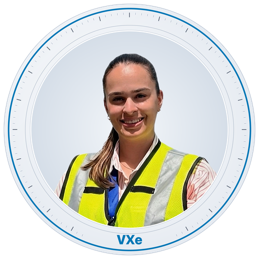

Valeria Vargas Ávila
VALTRIX EngineeringIngeniera Industrial & Fundadora
Costa Rica · Gran Área Metropolitana y remoto Datos de contacto
Datos profesionales
- Colegiatura
- Miembro activa CFIA desde 2025
- Carné
- 000000
- Certificación
- Auditora interna ISO 9001:2015
- Trayectoria
- 9 años en manufactura e infraestructura
- Correo
- valeria.vargas@valtrix.com
- (+506) 8488-0406
Sobre mí
Ingeniera industrial con 9 años entre industria electrónica, médica, construcción e infraestructura, y auditora certificada en la Norma Internacional de Calidad ISO 9001:2015. Mi trabajo ha sido siempre el mismo: entrar a una operación, entender cómo funciona de verdad y dejarla ordenada, medida y documentada.
Fundé VALTRIX Engineering para llevar ese mismo rigor a los negocios que nunca van a tener un ingeniero industrial en planilla: talleres, consultorios, distribuidoras, sodas y microfábricas de tres a veinte personas. Son negocios que funcionan, que venden, y que operan a ciegas porque su información vive repartida entre varias hojas de Excel y una libreta. Ordenar eso no requiere un sistema corporativo: requiere criterio y una semana de trabajo bien hecho. Cada trabajo lo atiendo personalmente.
“Sé por qué un procedimiento se incumple en la práctica, no solo por qué debería cumplirse en el papel. Atiendo personalmente cada intervención.”
Experiencia laboral
Pulse cualquier entrada para desplegarla
Ingeniera Industrial AERIS Holding Costa Rica
- Soporte estratégico en la gestión integral de proyectos de infraestructura aeroportuaria.
- Coordinación de equipos multidisciplinarios (ingeniería civil, electromecánica, pavimentos e industrial), asegurando alineación con los objetivos del proyecto.
- Planificación, seguimiento y control de cronograma, costos y alcance, garantizando cumplimiento de hitos establecidos.
- Elaboración de reportes ejecutivos y análisis de indicadores clave de desempeño para la toma de decisiones gerenciales.
- Gestión y control de documentación técnica y contractual, asegurando trazabilidad y cumplimiento normativo.
- Implementación y seguimiento de estándares de calidad en obra, verificando cumplimiento de especificaciones técnicas y buenas prácticas constructivas.
- Apoyo en procesos de aseguramiento y control de calidad mediante inspecciones, revisión de entregables y validación de actividades ejecutadas.
- Articulación entre áreas técnicas y administrativas para optimizar la eficiencia operativa de los proyectos.
- Soporte en la supervisión de campo, asegurando cumplimiento de plazos, calidad y requisitos técnicos.
Asistente Administrativa Grupo SEAR
- Realizar mejora en proceso realizando y controlando documentos bajo la Norma Internacional de Calidad.
- Controlar, revisar, archivar, cuestionar y estandarizar documentos tanto digital como físicamente, creando distintos respaldos por cualquier eventualidad en el sistema tecnológico.
- Realizar observaciones, seguimiento, cuestionamientos, análisis para establecer idea en la mejora continua de los procesos, con levantamiento de datos, para ser expuestos por medio de indicadores.
- Realización de diagrama de flujos, disminución de tiempos de respuesta en los distintos servicios ya sea cliente interno y externo.
- Proponer ideas de innovación, eficientes, optimas y confiables en los distintos procesos.
Técnico de Procesos y Operaria Philips
- Técnico de procesos (Jul 2021 – Jun 2022): Controlar más de 1000 equipos de medición (Tool, reglas, termómetros, hornos, etc.).
- Controlar el seguimiento de la calibración y qué tipo de calibración, implicando el orden y cuestionamiento del proceso.
- Contar con criterio propio y respuesta inmediata ante situaciones del día a día (cumplimiento regulatorio internacional).
- Uso de SAP para la identificación de inventarios, productos, costos, inversión en equipos, verificar fechas y fabricantes.
- Seguimiento y realización de documentos controlados con sus respectivas revisiones y mejoras para cumplir la Norma Internacional de Calidad.
- Operaria (Jul 2020 – Jul 2021): Uso de microscopios y soldadoras en líneas de producción, con seguimiento de ayudas visuales, diagramas de flujos y estándares de calidad.
Técnico de Producción y Operaria Trimpot Electrónica
- Técnico de producción (May 2018 – May 2020): Seguimiento y control de gráficas con interpretación de variaciones, medias, límites, usando herramientas como SAP, Excel y minitab.
- Análisis de recolección de datos de forma precisa y óptima, con programación de tiempos establecidos.
- Interpretar los planos y su simbología para tomar decisiones con criterio sólido.
- Realización de documentos controlados bajo la Norma Internacional de Calidad.
- Operaria (May 2017 – May 2018): Uso de microscopios y soldadoras. Cumplimiento de metas con análisis crítico visual si el producto pasaba o no pasaba.
Formación académica
Pulse cualquier entrada para desplegarla
Licenciatura en Ingeniería Industrial Universidad Fidélitas
Bachillerato en Ingeniería Industrial Universidad Fidélitas
Ingeniería en Cadena de Suministros y Logística Universidad Fidélitas
Certificaciones
Pulse cualquier entrada para desplegarla
Auditor en la Norma Internacional de Calidad 9001-2015 SHERPA Consultores
Power BI UTN — Universidad Técnica Nacional
Habilidades
Excel Intermedio Universidad Fidélitas
Inglés Ejecutivo Academia Líder
Competencias
Resumen de la experiencia listada arriba